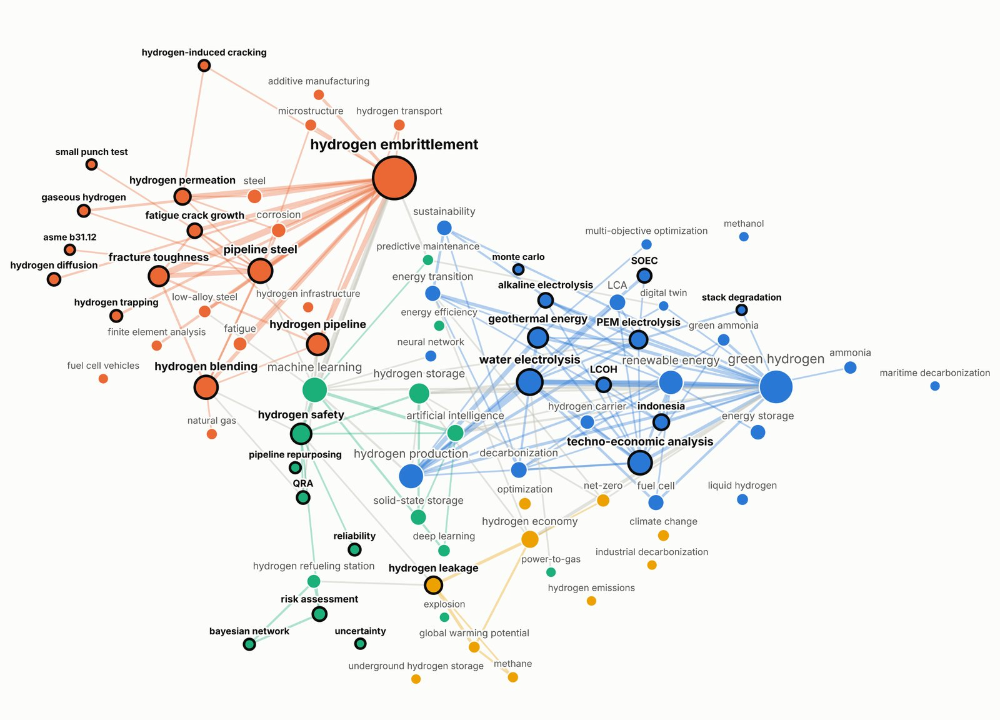

Apa yang sudah diketahui, dan di mana celahnyaWhat is known, and where the gaps are
Alur kajianReview flow
Dari 581 entri ke peta kesenjanganFrom 581 entries to a gap map
581entri database koleksi (30 Okt 2026)entries in the collection database (30 Oct 2026)
402studi terinklusi PRISMA dari 519 rekaman, ditambah 29 artikel v5 dan 125 paper v7studies included via PRISMA from 519 records, plus 29 articles (v5) and 125 papers (v7)
10pilar topik: A, B, C, D, E1, E2, F, G, H, Itopic pillars: A, B, C, D, E1, E2, F, G, H, I
31–96kandidat per pilar (filter tag dan kata kunci)candidates per pillar (tag and keyword filter)
10–14paper per matriks state-of-the-artpapers per state-of-the-art matrix
1peta kesenjangan dan posisi disertasigap map and dissertation position
Ekstraksi faktaFact extraction
Satu fakta atomik per baris: nilai, satuan, kondisi, halaman sumber, dan label verifikasi. Perbedaan antarsumber ditampilkan, tidak dirata-ratakan.
One atomic fact per row: value, unit, conditions, source page, and verification label. Differences between sources are shown, not averaged.
Klasifikasi matriksMatrix classification
Sel hijau bila istilah aspek ada di judul/abstrak/kata kunci atau muncul ≥3 kali di teks lengkap; otomatis lalu ditinjau.
A cell is green if the aspect term appears in the title/abstract/keywords or ≥3 times in the full text; automated, then reviewed.
BatasanLimitations
Satu peninjau berbantuan AI; koleksi adalah pilihan peneliti, bukan sensus literatur.
Single AI-assisted reviewer; the collection is the researcher’s selection, not a census of the literature.
Hitungan penyusunAuthor's countSeleksi 519 → 402 dari log skrining PRISMA; kandidat per pilar: A 43, B 31, C 68, D 88, E1 71, E2 96, F 35, G 86, H 61, I 73.Selection 519 → 402 from the PRISMA screening log; candidates per pillar: A 43, B 31, C 68, D 88, E1 71, E2 96, F 35, G 86, H 61, I 73.
Peta kata kunciKeyword map
Topik yang jarang bertemuTopics that rarely meet

Peta ko-okurensi kata kunci 581 paper (ukuran simpul = jumlah paper; klaster Louvain). Buatan peneliti, 30 Okt 2026.Keyword co-occurrence map of 581 papers (node size = number of papers; Louvain clusters). Made by the researcher, 30 Oct 2026.
Pasangan kata kunciKeyword pair
PaperPapers
QRA × LCOH
0
QRA × geothermal energy
0
QRA × hydrogen embrittlement
0
uncertainty × QRA
0
uncertainty × LCOH
0
geothermal energy × hydrogen embrittlement
0
geothermal energy × techno-economic analysis
3
Empat klaster tema: produksi H₂ hijau dan tekno-ekonomi; penggetasan dan integritas pipa; AI/ML, keselamatan, dan keandalan; kebocoran dan iklim.Four theme clusters: green H₂ production and techno-economics; embrittlement and pipeline integrity; AI/ML, safety, and reliability; leakage and climate.Hitungan penyusunAuthor's count
Ringkasan per pilarSummary by pillar
Apa yang mapan, diperdebatkan, dan belum ditelitiWhat is settled, debated, and not yet studied
Sepuluh pilar mengikuti taksonomi fakta proyek riset: dari sumber daya panas bumi sampai kebijakan.
Ten pillars follow the research project’s fact taxonomy, from geothermal resources to policy.
A
Sumber daya panas bumiGeothermal resources
Sudah mapanSettled
Utilisasi panas bumi >75% (angin <30%, surya <15%) [IEA 2024 hlm. 7]; Indonesia ±1/6 pembangkitan panas bumi global 2023 [IEA GHR 2025 hlm. 245].Geothermal utilisation >75% (wind <30%, solar <15%) [IEA 2024 p. 7]; Indonesia generates ~1/6 of global geothermal power in 2023 [IEA GHR 2025 p. 245].
Masih diperdebatkanDebated
Potensi 23,8 GW (Badan Geologi) vs 28,5 GW (IRENA) karena definisi berbeda [KESDM 2023; IRENA 2022 hlm. 54].Resource potential 23.8 GW (Geological Agency) vs 28.5 GW (IRENA) owing to different definitions [MEMR 2023; IRENA 2022 p. 54].
Belum diteliti (matriks)Not yet studied (matrix)
Ketidakpastian sumber daya 1/10; integritas material 2/10; mutu uap Kamojang dan Ulubelu tidak ditemukan.Resource uncertainty 1/10; material integrity 2/10; steam quality data for Kamojang and Ulubelu not found.
Model flash-biner + elektrolisis: 200 °C, 100 kg/s → 0,0498 kg/s H₂; eksergi total 45,8% [278].Flash-binary + electrolysis model: 200 °C, 100 kg/s → 0.0498 kg/s H₂; total exergy efficiency 45.8% [278].
Masih diperdebatkanDebated
Jalur listrik vs uap: SOEC paling efisien, tetapi skala sistem 0,001–5 MW, sedangkan ALK 1–100+ MW [069 Tabel 6].Power route vs steam route: SOEC is the most efficient but at 0.001–5 MW system scale, while ALK spans 1–100+ MW [069 Table 6].
Belum diteliti (matriks)Not yet studied (matrix)
Risiko/QRA 0/12; studi kasus/pilot 1/12; ketidakpastian 1/12.Risk/QRA 0/12; case study/pilot 1/12; uncertainty 1/12.
Dampak degradasi stack: LCOH +15,5% (ALK 100 MW [269]) hingga +23,1% (PEM, EUR [311]).Stack degradation effect: LCOH +15.5% (ALK 100 MW [269]) up to +23.1% (PEM, EUR [311]).
Belum diteliti (matriks)Not yet studied (matrix)
Kemurnian H₂ 3/12; kebutuhan air 4/12; protokol uji percepatan (AST) baku ALK dan PEM belum ada [269; 311].H₂ purity 3/12; water demand 4/12; no standard accelerated stress test (AST) protocol for ALK and PEM [269; 311].
Rumus LCOH nilai kini dan anuitas (CRF) [269 Pers. 8; 311 Pers. 5–7]; listrik PLTP menyumbang >64% LCOH 6,52–6,67 USD/kg [455].Present-value and annuity (CRF) LCOH formulations [269 Eq. 8; 311 Eq. 5–7]; geothermal electricity makes up >64% of an LCOH of 6.52–6.67 USD/kg [455].
Masih diperdebatkanDebated
Estimasi Indonesia 1,47 [357] hingga 19,41 USD/kg [393]; GIZ 8,9 USD/kg; batas sistem dan tarif berbeda; tahun basis sering tidak ditulis.Indonesian estimates range from 1.47 [357] to 19.41 USD/kg [393]; GIZ 8.9 USD/kg; boundaries and tariffs differ; cost base year often unstated.
HIAD 2.0: 576 kejadian dianalisis, 48% ledakan dan 31% kebakaran; faktor sistem manajemen keselamatan ±49% [443].HIAD 2.0: 576 events analysed, 48% explosions and 31% fires; safety management system factors ~49% [443].
Masih diperdebatkanDebated
Data kegagalan generik dari industri lain; probabilitas deteksi 0,9 di HyRAM tanpa dasar ketat [444]; BN dinamis mulai dipakai untuk unit produksi H₂ dan HRS [534; 549; 554].Generic failure data borrowed from other industries; HyRAM detection probability of 0.9 lacks a rigorous basis [444]; dynamic BNs are emerging for H₂ production units and HRS [534; 549; 554].
Belum diteliti (matriks)Not yet studied (matrix)
QRA fasilitas elektrolisis 1/12; HE material 2/12; tidak satu pun dari empat paper BN membahas fasilitas panas bumi.QRA of electrolysis facilities 1/12; material HE 2/12; none of the four BN papers addresses geothermal facilities.
Penggetasan hidrogen baja pipaHydrogen embrittlement of pipeline steel
Sudah mapanSettled
H₂ menurunkan keuletan bertakik: rasio RA 0,33–0,42, tetapi NTS 0,90–0,96 (X52–X70, 80 bar) [003]; las X52 rasio RA 0,30 pada 10 MPa [201].H₂ reduces notched ductility: RA ratio 0.33–0.42 while NTS stays 0.90–0.96 (X52–X70, 80 bar) [003]; X52 seam weld RA ratio 0.30 at 10 MPa [201].
Masih diperdebatkanDebated
Las vs logam induk: X100 HE 36,6% vs 6,5% (elektrokimia) [305], tidak lebih rentan pada kekuatan luluh sama (gas 21 MPa) [337]; elektrokimia IH 79,05% vs gas 8,01% [523].Weld vs base metal: X100 HE index 36.6% vs 6.5% (electrochemical) [305], yet no higher susceptibility at equal yield strength (21 MPa gas) [337]; electrochemical IH 79.05% vs 8.01% in gas [523].
Belum diteliti (matriks)Not yet studied (matrix)
Probabilistik 1/12; data FCGR di 100% H₂ terbatas [241 hlm. 16]; H₂S panas bumi × layanan H₂ belum dikaji [459].Probabilistic treatment 1/12; FCGR data in 100% H₂ limited [241 p. 16]; geothermal H₂S × H₂ service not yet studied [459].
Monte Carlo lazim untuk LCOH: 20.000 iterasi, degradasi menaikkan LCOH pada 100% kasus [311]; Monte Carlo PoF pipa [243].Monte Carlo is common for LCOH: 20,000 iterations, degradation raises LCOH in 100% of cases [311]; Monte Carlo PoF for pipelines [243].
Masih diperdebatkanDebated
Distribusi masukan: lognormal laju retak [241] vs pengurangan sifat yang diasumsikan [243]; biaya modal 15% → 5% menurunkan LCOH hingga 45% [ESMAP 2023].Input distributions: lognormal crack-growth rates [241] vs assumed property reductions [243]; cutting the cost of capital from 15% to 5% lowers LCOH by up to 45% [ESMAP 2023].
Rantai pasok dan logistikSupply chain and logistics
Sudah mapanSettled
Biaya angkut amonia ±100 vs H₂ ±1.500 USD/t; pencairan memakan 25–35% H₂ awal [IRENA 2022].Shipping cost ~100 USD/t for ammonia vs ~1,500 USD/t for H₂; liquefaction consumes 25–35% of the initial H₂ [IRENA 2022].
Masih diperdebatkanDebated
Tidak ada moda optimal untuk semua skenario; bergantung jarak dan volume [JRC 2022 hlm. 5, 70]; cracking amonia hanya memulihkan 69,5% H₂ [451].No mode is optimal in every scenario; it depends on distance and volume [JRC 2022 pp. 5, 70]; ammonia cracking recovers only 69.5% of H₂ [451].
RHAN diluncurkan April 2025 (215 rencana aksi); PP 40/2025 menargetkan H₂ sebagai energi final [KESDM 2025; PP 40/2025].The national hydrogen and ammonia roadmap (RHAN) launched in April 2025 (215 action plans); Government Regulation 40/2025 targets H₂ as final energy [MEMR 2025; GR 40/2025].
Masih diperdebatkanDebated
Ambang intensitas emisi (konsep KESDM <2,5 kg CO₂/kg H₂ terbarukan) dan sertifikasi masih menunggu RPP tata kelola [EBTKE 2025].Emission-intensity thresholds (MEMR concept <2.5 kg CO₂/kg H₂ for renewable) and certification await the hydrogen governance regulation [DG NREEC 2025].
Hitungan penyusunAuthor's countAngka “x/n” = jumlah paper bersel hijau dibagi jumlah baris matriks pilar.“x/n” = number of green cells divided by the number of rows in the pillar matrix.
BiayaCost
LCOH hidrogen panas bumi Indonesia tersebar lebarIndonesian geothermal hydrogen LCOH is widely scattered
Estimasi khusus panas bumi IndonesiaIndonesia geothermal-specific estimateRentang pembandingComparison range
Estimasi biaya hidrogen panas bumi di Indonesia. Batas sistem, skala, tarif, dan tahun basis berbeda antarstudi; angka tidak dirata-ratakan dan tidak dikonversi.Cost estimates for geothermal hydrogen in Indonesia. System boundaries, scale, tariffs, and cost base years differ across studies; values are neither averaged nor converted.Lihat dataView data
StudiStudy
USD/kg
SumberSource
CatatanNote
Tinjauan global sistem H₂ panas bumiGlobal review, geothermal H₂ systems